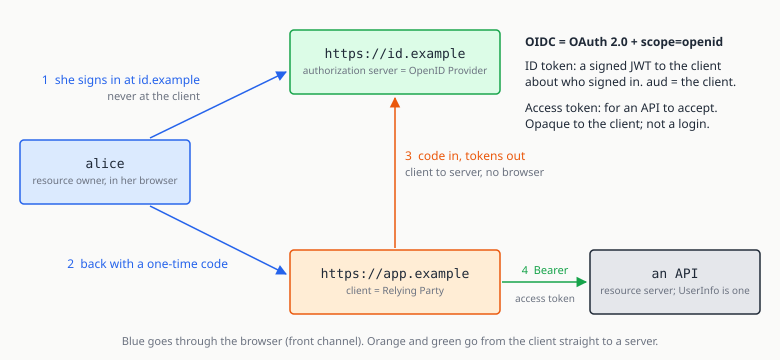
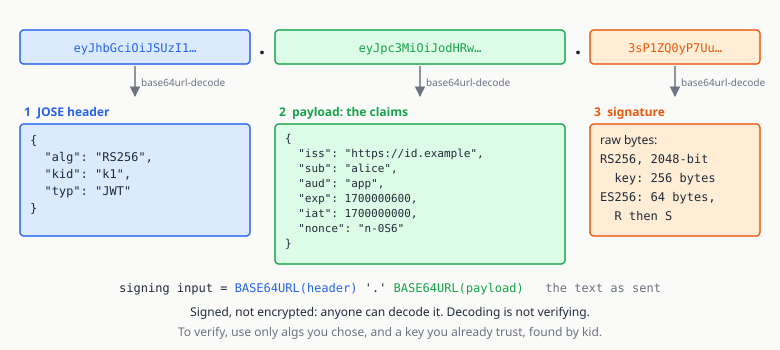
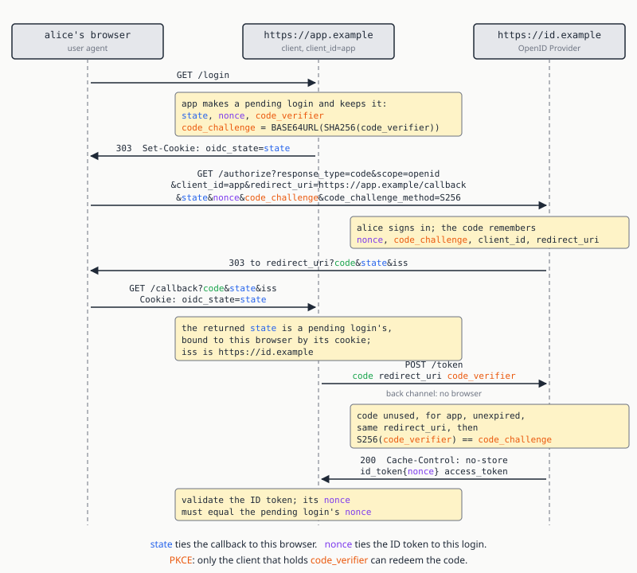
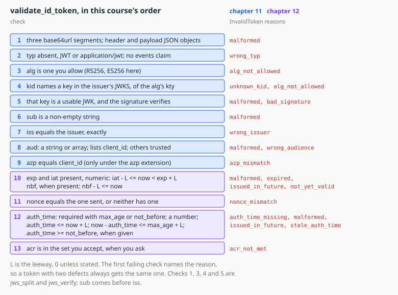
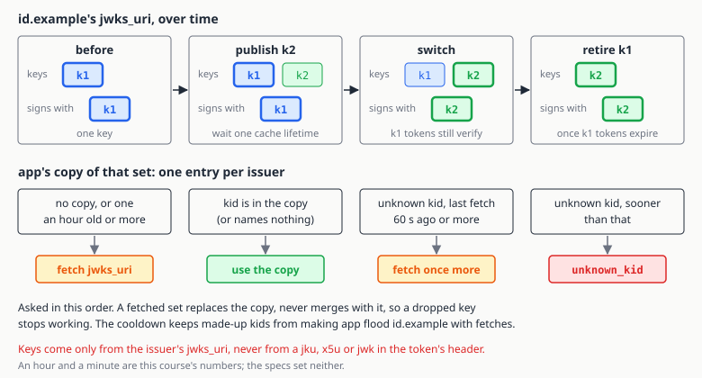
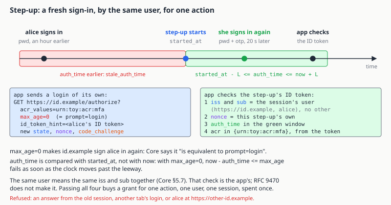
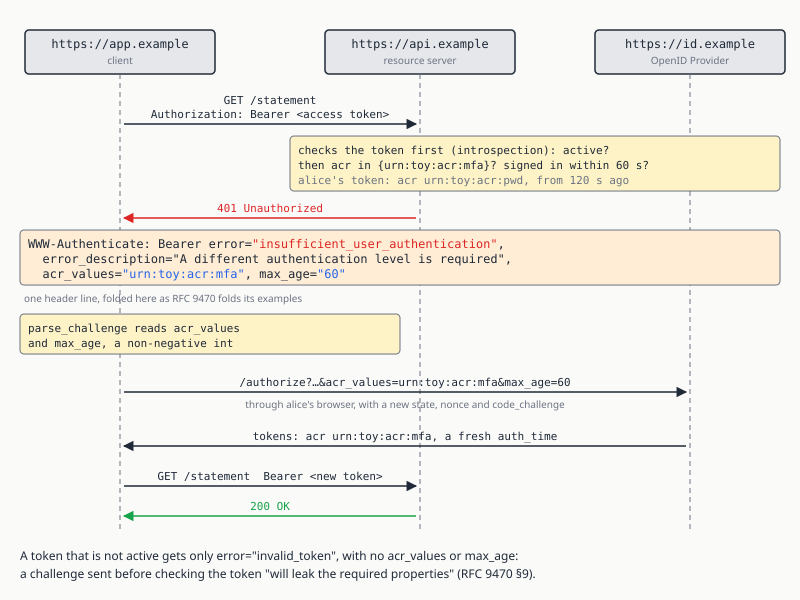

OIDC koans lessons
The lesson from the top of each chapter, with a picture where a picture says it faster. Everything here works offline; only the Read more links leave the page.
00How a koan works
Every file in koans/ is a list of tiny tests. Each has a blank, written __. Replace the blank with whatever makes the assertion true, save, run again. The runner stops at the first failure and prints the file and line to look at, plus the koan's docstring, which we call the meditation.
There are two kinds of blank. A plain __ stands for a value: a number, a string, a list. A __() on a line of its own stands for code you write. It sits where a function body should be, and the meditation tells you what the function must do, step by step. Until you replace it, calling that function raises NotImplementedError and the footer points straight at it.
Each file starts with a lesson like this one. Read it once before the koans. Between the lesson, the earlier chapters, and each meditation, you have everything a koan needs.
This course is offline. Nothing here opens a socket or reads the real clock: the provider lives in the toy/ package, and time is a clock you can advance. Read toy/ whenever you like, but the koans never ask you to edit it.
The lessons page, lessons/index.html, gathers every chapter's lesson in one place, with pictures where a picture helps. It opens in any browser, offline.
01OAuth 2.0 roles, and why OpenID Connect sits on top
OAuth 2.0 (RFC 6749) is about delegation. Its four roles, in this course: the resource owner (alice), the client (https://app.example), the authorization server (https://id.example) and the resource server (an API).
The client sends alice's browser to the authorization server. She signs in there, never at the client, and the browser returns with a one-time code. The client swaps the code for tokens by calling the server directly. The access token is "a string representing an authorization issued to the client", and "usually opaque to the client" (RFC 6749 §1.4). It is for an API to accept. It is not a statement to the client about who signed in.
OpenID Connect is "a simple identity layer on top of the OAuth 2.0 protocol". Add openid to the scope and the token response also carries an ID Token, a signed JWT in which the server tells this client who signed in. OIDC calls the client a Relying Party (RP) and the authorization server an OpenID Provider (OP). Its UserInfo endpoint is a protected resource like any API, and it answers to an access token.
A common mistake: treating a working access token as a login. Any client holding a token for alice can call the API with it. Only an ID token whose audience is you, once validated, tells you that alice signed in to you.

Read more
02Bytes, base64url and JSON
Signatures and hashes work on bytes, never on text. Text becomes bytes through an encoding, and JOSE encodes its JSON as UTF-8. "Zoë" is three characters but four bytes.
A token travels in URLs and headers, so its bytes are written in base64url (RFC 4648 §5), which is base64 with - and _ in place of + and /. RFC 7515 §2 also drops the padding. Its Base64url Encoding has "all trailing '=' characters omitted", and comes "without the inclusion of any line breaks, whitespace, or other additional characters". A decoder puts the padding back, decodes, and refuses anything else.
JSON (RFC 8259) has many spellings of one object. An object is "an unordered collection" of members, and whitespace between tokens is insignificant. Two equal dicts can serialize to different bytes, so a signature covers the exact bytes that were sent, never an object you parsed and wrote out again. Forms (RFC 6749 Appendix B) are a third encoding, where a space becomes + and a + becomes %2B.
A common mistake: decoding with base64.urlsafe_b64decode alone. It refuses unpadded text unless its length happens to be a multiple of 4, and once you pad that text it also accepts + and /, spaces, and junk after the padding.
Read more
03JWS compact serialization and JWT claims
A JWS in compact form (RFC 7515 §7.1) is three base64url segments joined by dots: a JOSE header, a payload and a signature. The header is JSON that says how the token was signed: alg names the algorithm, typ the kind of token, and kid hints at the key. The signature covers the JWS Signing Input, ASCII(BASE64URL(UTF8(JWS Protected Header)) || '.' || BASE64URL(JWS Payload)). That is the encoded text as sent, never a re-serialized object.
A JWT (RFC 7519) is a JWS whose payload is a JSON claims set. The registered claims have short names: iss, sub, aud, exp, nbf, iat and jti. aud is "an array of case-sensitive strings", or a single string when the JWT has one audience, so code that reads it must handle both.
A JWS is signed, not encrypted, so anyone can decode it. Decoding is not verifying. To verify, the verifier picks the algorithms it accepts and checks the signature with a key it already trusts. RFC 8725 §3.1 says libraries "MUST enable the caller to specify a supported set of algorithms". An Unsecured JWS has alg "none" and an empty signature. OIDC Core §2 says ID Tokens "MUST NOT use none", unless the client asked for it at registration and no ID token comes from the authorization endpoint.
A common mistake: letting the token's own alg decide how it is checked, so a token that says "none" is checked by nothing.

Read more
04HS256: MACs and shared secrets
HS256 is HMAC with SHA-256 (RFC 7518 §3.2). The signer runs HMAC over the JWS Signing Input with a secret key, and the 32-byte result, in base64url, is the third segment. The verifier holds the same secret, computes the MAC again and compares. A MAC can show "that whoever generated the MAC was in possession of the MAC key". Both sides hold that key, so either side could have made the token. A MAC is not a signature, and it cannot say who wrote it.
In OIDC the HS256 key is the client's own secret. OIDC Core §10.1 says "The MAC key used is the octets of the UTF-8 representation of the client_secret value." Symmetric signatures "MUST NOT be used by public (non-confidential) Clients", which cannot keep a secret. RFC 7518 §3.2 wants a key "of the same size as the hash output" or larger, and Core §16.19 says an HS256 client_secret "MUST contain at least 32 octets".
Compare the MAC in constant time. Python's == on bytes can return as soon as it finds a difference, so its timing hints at how much of a guess was right. An attacker who times many guesses can then build a valid MAC one byte at a time. Python documents hmac.compare_digest as "designed to prevent timing analysis". OIDC Core §16.12 asks verifiers to "continue running until all the octets have been processed".
A common mistake: checking the MAC with ==, or keying it with a short, guessable secret.
Read more
05RS256 and ES256: public-key signatures
RS256 and ES256 split the key in two. The provider signs with a private key, and anyone can verify with the public key it publishes. RS256 is RSASSA-PKCS1-v1_5 with SHA-256 (RFC 7518 §3.3), which needs "A key of size 2048 bits or larger". It gives the same signature for the same input. OIDC Core §3.1.3.7 says an ID token's alg "SHOULD be the default of RS256", unless the client registered another one.
ES256 is ECDSA on P-256 with SHA-256 (RFC 7518 §3.4). Each signature usually uses a fresh random number, so two signatures of one input differ and both verify. Check one by verifying it, never by comparing bytes. In a JWS the signature is R then S, each "32 octets long", 64 octets in all. The cryptography package reads and writes ECDSA signatures as DER, so convert.
In algorithm confusion (RFC 8725 §2.1), an attacker turns "RS256" into "HS256", and a verifier uses "the RSA public key as the HMAC shared secret". That key is public, so the attacker can compute the MAC too. RFC 8725 §3.1 says "each key MUST be used with exactly one algorithm". Pin each algorithm to one key type, and check the key you found against the alg.
A common mistake: handing "the key" to whatever the token's alg names, without asking what kind of key it is.
Read more
06JWK, JWKS and kid
A JWK (RFC 7517 §4) is a key written as a JSON object. kty names its type: "RSA", "EC" or "oct". RSA keys have n and e, big-endian integers in base64url. EC keys have crv, a curve name such as "P-256", and the point's x and y coordinates in base64url. use says whether a key is for "sig" or "enc". A JWK Set (§5) is {"keys": [...]}. A provider publishes its set at the jwks_uri in its discovery document, and OIDC Discovery says that set "MUST NOT contain private or symmetric key values".
A JWS header's kid names the key that signed it. RFC 7517 §4.5 says its structure "is unspecified" and that it is "a case-sensitive string". Compare it exactly with the keys you already hold, and never use it as a file path, a query or a URL. Two issuers can both have a key called "k1", so look a kid up only in the set of the issuer you expect.
A header can also carry a key (jwk, x5c) or point at one (jku, x5u), and whoever wrote the token wrote the header. OIDC Core §2 says ID Tokens "SHOULD NOT use" these fields, and RFC 8725 §3.8 says the keys must "belong to the issuer".
A common mistake: verifying with the key the token brought, or fetching the URL it named, which also lets anyone make your server send requests.
Read more
07The authorization code flow, end to end
OIDC Core §3.1.1 lists the steps. The client sends the browser to the provider's authorization endpoint with response_type=code, scope=openid, its client_id and its redirect_uri. The provider signs the user in and sends the browser back to the redirect_uri with a code. The client posts that code to the token endpoint itself, and the JSON response carries an ID token and an access token. The client validates the ID token and reads from it who signed in.
The browser carries only the code. A code is single-use and short-lived: RFC 6749 §4.1.2 recommends 10 minutes at most, and this provider allows 60 seconds. Tokens travel on the back channel, in a response marked Cache-Control: no-store. When the provider cannot issue a code, it sends the browser back to a valid redirect_uri with an error parameter instead.
Each token has its own reader. The ID token is a statement to the client, and its aud names the client. The access token is for an API such as UserInfo, which answers the same whichever client the token was issued to. RFC 6749 §10.16 describes the attack in the implicit flow: an access token issued to an attacker's client, handed to another client as a login.
A common mistake: signing someone in because their access token works at UserInfo. Sign in only from a validated ID token whose aud is you.
Read more
08redirect_uri exact matching and state
The code goes wherever redirect_uri says, so the provider checks it. OIDC Core §3.1.2.1 says it "MUST exactly match" a registered value, by simple string comparison (RFC 3986 §6.2.1). RFC 9700 §2.1 allows one exception, the port of a localhost redirect URI for a native app; this toy provider has no native clients. A failing URI gets an error page, never a redirect (RFC 6749 §4.1.2.1), and the token request repeats the same redirect_uri.
state ties the callback to the browser that started the login. Without it, mallory starts a login as herself, stops at the callback, and gets alice's browser to load that URL: alice is now signed in to the client as mallory (login CSRF). RFC 9700 §2.1 asks for state values that are one-time use and "securely bound to the user agent". This client keeps each pending state in a cookie, so one browser can have several logins pending, and drops a state once it is used. The same section lets PKCE or the OIDC nonce stand in for state under conditions chapter 09 covers; this client checks state.
A client must not be an open redirector either. RFC 9700 §2.1: clients "MUST NOT expose URLs that forward the user's browser to arbitrary URIs".
A common mistake: comparing state with !=. A callback with no state, in a browser with no pending login, compares None with None and passes.
Read more
09nonce and PKCE
Each binds something state does not. nonce binds the ID token to the browser session that asked for it: the client sends a fresh, unguessable value and keeps it with the pending login. Sending one is OPTIONAL in the code flow, but once sent, OIDC Core §3.1.3.7 says a nonce Claim "MUST be present" in the ID token, equal to the value sent.
PKCE (RFC 7636) binds the code to the client instance that asked for it. The client makes a code_verifier of 43 to 128 unreserved characters, sends code_challenge = BASE64URL(SHA256(ASCII(code_verifier))) with method S256, and redeems the code with the verifier. A client able to use S256 "MUST use" it: with plain, the challenge is the verifier, so whoever sees the request has it. RFC 9700 §2.1.1 says "Public clients MUST use PKCE", and §4.8.2 has the provider refuse a verifier for a code issued with no challenge.
Can they replace state? RFC 9700 §2.1 says a client that has made sure the provider supports PKCE "MAY rely on" it against CSRF, and "In OpenID Connect flows, the nonce parameter provides CSRF protection"; otherwise state must be used. Against code injection, §2.1.1 lets confidential OIDC clients use nonce instead of PKCE "With additional precautions" (§4.5.3.2): check that ID token's nonce first, and use no token until it matches.
A common mistake: checking nonce only when the ID token happens to carry one.

code_verifier never passes through the browser, only its S256 hash does.Read more
10The token endpoint and client authentication
The client redeems its single-use code with a POST to the token endpoint, and a confidential client proves who it is there. A public client (RFC 6749 §2.1) cannot keep a secret, so it sends only its client_id, and PKCE plus the code's binding to that client_id protect the exchange.
client_secret_basic is the default when no method is registered (OIDC Core §9). RFC 6749 §2.3.1 form-urlencodes the client_id and the secret, each on its own, before they are joined with ":" and base64-encoded into an HTTP Basic header; client_secret_post sends both in the form. "The client MUST NOT use more than one authentication method in each request".
private_key_jwt sends a JWT signed with the client's own key: iss and sub are the client_id, jti is single-use, exp is near. RFC 9700 §2.5: "It is RECOMMENDED to use asymmetric cryptography for client authentication". Core §9 still says "The Audience SHOULD be the URL of the Authorization Server's Token Endpoint". RFC 10070 (November 2026) replaces that: aud "MUST use the issuer identifier [RFC8414] of the authorization server as its sole value", and the server "MUST reject any JWT that does not contain its issuer identifier as its sole audience value".
A common mistake: base64(f"{client_id}:{secret}"). The first ":" ends the client_id (RFC 7617 §2), and a "%" or "+" in either part is form-decoded.
Read more
11ID token validation, part 1: what kind, who signed, from whom, for whom
OIDC Core §3.1.3.7 lists what a client checks before it believes an ID token. This chapter takes the checks of who made it and who it is for; chapter 12 takes time, nonce, acr and auth_time. This course runs them in one order, so a token with two defects always gets the same reason: typ, then alg, key and signature, then sub, iss, aud and azp. Item 6 lets TLS stand in for the signature in the code flow (a MAY); this course verifies.
The issuer "MUST exactly match the value of the iss (issuer) Claim": no trailing-slash fixes, no prefixes. aud, one string or an array of strings, must contain the client's "client_id value", and the token "MUST be rejected" if it "contains additional audiences not trusted by the Client".
azp follows errata set 2. Core §2 says it "only occurs when extensions beyond the scope of this specification are used", and implementations without them "are encouraged to not use azp and to ignore it when it does occur". Under such an extension, validate azp as the extension says. This course's toy extension wants azp equal to the client_id, and present when aud has several values. azp never stands in for the aud check.
A common mistake: client_id in aud. When aud is the string "webapp", in finds "app" inside it.

validate_id_token in the order toy.client runs it, with the reason each check raises. The order decides which reason a token with two defects gets.Read more
12ID token validation, part 2: time, nonce, acr and auth_time
Once the signature, iss and aud hold, OIDC Core §3.1.3.7 items 9 to 13 remain. "The current time MUST be before the time represented by the exp Claim", and Core §2 allows "some small leeway, usually no more than a few minutes, to account for clock skew". With leeway L, this course accepts a token iff iat - L <= now < exp + L, and checks nbf when present. Rejecting an old iat is optional: "The acceptable range is Client specific."
exp, iat, nbf and auth_time are NumericDates (RFC 7519 §2): JSON numbers of seconds, and "non-integer values can be represented". A string, a boolean, null, NaN or Infinity is malformed; in Python, True is an int.
If a nonce was sent, "a nonce Claim MUST be present" and equal (chapter 09). If acr was requested, "the Client SHOULD check that the asserted Claim Value is appropriate". Core defines no order among acr values, so check membership in the set you accept. A max_age request makes auth_time "REQUIRED" (Core §2), and the client "SHOULD check the auth_time Claim value and request re-authentication if it determines too much time has elapsed". exp says nothing about when the user signed in.
A common mistake: refusing only when now > exp. At now == exp, the token "MUST NOT be accepted".
Read more
13Access tokens, ID tokens, UserInfo, and matching sub
The two tokens have different readers. The ID token is the provider's statement to the client about one sign-in, and its aud is the client. The access token is for an API, sent as "Authorization: Bearer <token>" (RFC 6750 §2.1). The client never reads it: RFC 9068 §6 says "The client MUST NOT inspect the content of the access token", even when it is a JWT.
UserInfo (Core §5.3) is one such API. It answers with claims about whoever the access token belongs to, and "The sub (subject) Claim MUST always be returned". It cannot know which sign-in the client has in mind. So Core §5.3.2: the UserInfo sub "MUST be verified to exactly match the sub Claim in the ID Token; if they do not match, the UserInfo Response values MUST NOT be used." That stops token substitution (Core §16.11): another user's access token sent along with your ID token.
An API refuses with a WWW-Authenticate challenge (RFC 6750 §3.1): invalid_token, with 401, for a token "expired, revoked, malformed, or invalid for other reasons"; insufficient_scope, with 403, for a token without the scope needed. For a request with no token at all, "the resource server SHOULD NOT include an error code".
A common mistake: merging UserInfo into the signed-in user without comparing sub, or comparing it loosely.
Read more
14Claims and scopes; the claims parameter and essential claims
Scope values ask for sets of claims (Core §5.4): email asks for email and email_verified, profile for name and its kin. They "are treated by Authorization Servers as Voluntary Claims". In the code flow, where an access token is issued, they come "from the UserInfo Endpoint"; only when none is (response_type=id_token) are they "returned in the ID Token". Scope values "not understood by an implementation SHOULD be ignored" (§3.1.2.1).
The claims parameter (Core §5.5) asks for single claims, in its id_token member, its userinfo member, or both. Each claim asks with null, the default manner, or an object with essential, value or values. Support "is OPTIONAL": look for claims_parameter_supported in Discovery first.
Essential does not oblige the provider: "the Authorization Server MUST NOT generate an error when Claims are not returned, whether they are Essential or Voluntary, unless otherwise specified in the description of the specific claim". sub with a value is one exception: "a mismatch MUST cause the authentication to fail"; an essential acr with values is another. A claim not returned "SHOULD be omitted", not sent as null or "" (§5.3.2).
A common mistake: counting on a requested claim, essential or not. Look for it, and decide what to do without it.
Read more
15Discovery, issuer matching and mix-up defence
A client learns a provider's endpoints and keys from a JSON document at the issuer plus /.well-known/openid-configuration (Discovery §4). If the issuer has a path, "any terminating / MUST be removed before appending". RFC 8414, for OAuth metadata, inserts /.well-known/ between host and path.
"The issuer value returned MUST be identical to the Issuer URL that was used as the prefix", and to iss in ID tokens (§4.3); otherwise it "MUST NOT be used". A document naming another issuer, with its own keys, is an impersonation (§7.2). The path belongs to the issuer: sub 1234 at https://id.example is not sub 1234 at https://id.example/sales.
A client with several providers and one callback can be mixed up: a login sent to one provider comes back with a code from another, and the client hands that code and its PKCE verifier to the wrong token endpoint. RFC 9207 adds iss to authorization responses, errors included. The client decodes it and compares it, by "simple string comparison", with the issuer it sent the request to. On a mismatch, clients "MUST reject the authorization response and MUST NOT proceed". They "MUST reject authorization responses without the iss parameter" from a provider that supports it: authorization_response_iss_parameter_supported says so.
A common mistake: comparing issuers by prefix, or after trimming a slash.
Read more
16JWKS key rotation
A provider changes its signing key from time to time, and at once if a key leaks. OIDC Core §10.1.1: it publishes its keys as a JWK Set at its jwks_uri, and the kid in each token's header names the key that signed it. It adds new keys to the set first, then "can begin using a new key at its discretion". The verifier "knows to go back to the jwks_uri location to re-retrieve the keys when it sees an unfamiliar kid value", and the set "SHOULD retain recently decommissioned signing keys for a reasonable period of time". With several keys in a set, a kid "MUST be provided" (§10.1).
So a client keeps a copy of each issuer's set, and fetches it again when the copy is too old, or when a token names a kid the copy lacks. Anyone can send a token with a made-up kid, so that second fetch is rate-limited: at most once per cooldown, per issuer. The new set replaces the old, so a key the provider dropped stops working. The specs set neither number; this course uses an hour for the copy and a minute for the cooldown.
For a rotation no client notices, even one that never refetches for an unfamiliar kid, the provider publishes the new key, waits one cache lifetime, signs with it, and retires the old key once its tokens expire.
A common mistake: fetching keys from a URL the token names, fetching for every unknown kid, or keeping a key forever.

Read more
17sub vs email: choosing an account key
An ID token's sub is "A locally unique and never reassigned identifier within the Issuer for the End-User" (Core §2): a case-sensitive string of at most 255 ASCII characters. Locally unique means unique at that issuer only, and another provider may give the same sub to someone else. So Core §5.7: iss and sub together "are the only Claims that an RP can rely upon as a stable identifier", and email, phone_number, preferred_username and name "MUST NOT be used as unique identifiers". An issuer "MAY re-use an email Claim Value across different End-Users at different points in time".
email_verified true (Core §5.1) "means that the OP took affirmative steps to ensure that this e-mail address was controlled by the End-User at the time the verification was performed". It is a JSON boolean, so the string "true" is not true. It says nothing about today, and each provider verifies by its own rules, which are not yours.
So key accounts by (iss, sub). An email may hint that a new sign-in belongs to an account you have. Link only from that account's session, to a login the same browser started, and only once the person confirms it.
A provider may also give each client its own sub for the same person (pairwise identifiers, Core §8), so that clients cannot correlate users.
A common mistake: finding the account by email, or by sub alone.
Read more
18Refresh tokens and rotation
A refresh token gets a new access token without the user: the client posts grant_type=refresh_token (RFC 6749 §6), and its scope "MUST NOT include any scope not originally granted by the resource owner". The toy grants a refresh token with every code, so offline_access is left out. Core §11: "The use of Refresh Tokens is not exclusive to the offline_access use case. The Authorization Server MAY grant Refresh Tokens in other contexts that are beyond the scope of this specification."
A refresh is not a sign-in. An ID token in the response is about the original one (Core §12.2): its iss, sub and aud "MUST be the same as in the ID Token issued when the original authentication occurred", its auth_time "MUST represent the time of the original authentication", and it "SHOULD NOT have a nonce Claim". So refreshing never satisfies max_age.
A refresh token holds the whole grant, so it is worth stealing. RFC 9700 §2.2.2: refresh tokens for public clients "MUST be sender-constrained or use refresh token rotation". With rotation each refresh returns a new refresh token and spends the old one, which the client "MUST discard" (RFC 6749 §6). If a spent token comes back, the server "cannot determine which party submitted the invalid refresh token, but it will revoke the active refresh token" (RFC 9700 §4.14.2).
A common mistake: treating a refreshed ID token as a fresh sign-in.
Read more
19Sessions and logout
A login leaves three things: the app's session, the provider's session (its cookie in the browser) and the tokens. Ending one ends neither of the others. Signing in raises a session's privilege, so the app gives it a new id then: an id known before the sign-in must name nothing after it.
RP-Initiated Logout sends the browser to the provider's end_session_endpoint with an id_token_hint (RECOMMENDED), client_id, post_logout_redirect_uri and state. The provider "MUST NOT perform post-logout redirection if the post_logout_redirect_uri value supplied does not exactly match" a registered one. It "MUST ask the End-User" before logging out "if an id_token_hint was not provided or if the supplied ID Token does not belong to the current OP session". Logout requests "are intended to be idempotent": logging out twice is no error.
Back-Channel Logout has the provider POST a Logout Token to each app the user signed in to. It is signed like an ID token and carries an events claim with the member http://schemas.openid.net/event/backchannel-logout, a sub, a sid or both, and never a nonce: "A nonce Claim MUST NOT be present", so that it cannot pass for an ID token. With no sid, all of that user's sessions at the app end. Front-Channel Logout loads each app's logout page in an iframe, which blocked third-party content can break.
A common mistake: deleting the app's cookie and calling the user logged out.
Read more
20Authentication context: acr, amr, auth_time, max_age, prompt, acr_values
An ID token can say how and when the user signed in. auth_time is when they last actively authenticated. amr is a "JSON array of strings that are identifiers for authentication methods" (RFC 8176 names pwd, otp, hwk, mfa and more); mfa says several factors were used, not which. acr is a case-sensitive string naming an authentication context class; "Parties using this claim will need to agree upon the meanings".
The request asks and the token answers. Past max_age the provider "MUST attempt to actively re-authenticate", and the token "MUST include an auth_time Claim Value"; "max_age=0 is equivalent to prompt=login". With prompt=login it "MUST reauthenticate the End-User even if the End-User is already authenticated", and "If it cannot reauthenticate the End-User, it MUST return an error"; auth_time comes only if asked for. prompt=none "MUST NOT display any authentication or consent user interface pages". acr_values asks for acr "as a Voluntary Claim", and an unmet one SHOULD get the session's current acr. Only an Essential acr request with values turns an unmet level into a failed sign-in.
So check what came back. A sign-in made for your request has auth_time >= the time you sent it, less leeway. An acr counts only if you agreed its meaning with that issuer: there is no global order to rank it by.
A common mistake: assuming max_age, prompt or acr_values were honoured.
Read more
21Step-up authentication (RFC 9470), and binding to the user
Some actions need more than the sign-in a session began with. A resource that wants a stronger or more recent sign-in answers 401 with error="insufficient_user_authentication": "The authentication event associated with the access token presented with the request does not meet the authentication requirements of the protected resource". Its acr_values and max_age say what would; max_age "has to represent a non-negative integer". The client "SHOULD parse the WWW-Authenticate header for acr_values and max_age and use them, if present, in constructing an authorization request". RFC 9470 changes nothing in how the provider handles those parameters.
To the client a step-up is a login of its own: its own state, nonce and verifier, bound to the browser beside any other, kept with the session, the action and its parameters. The answer counts only from the same user. Core §5.7: iss and sub, "used together, are the only Claims that an RP can rely upon as a stable identifier". That check is the app's job; RFC 9470 does not make it. The sign-in must also be fresh, auth_time after the step-up began, at an acr read from the token, never from the request.
It buys a grant for one action with those parameters, for one user in one session, for a short time. Spend it once: check and remove it in one step.
A common mistake: trusting whoever signs in during a step-up.

max_age=0 forces a new sign-in. Its ID token counts only with this step-up's nonce, an auth_time after started_at (less leeway), the acr asked for, and the iss and sub of the user who asked.
acr_values and max_age, which the client copies into its next authorization request.Read more
22Assurance in the wild: how providers report it differently
Core gives three channels, acr, amr and auth_time, and leaves meaning to agreement: for acr, "Parties using this claim will need to agree upon the meanings of the values used". Providers fill them in differently. As of November 2026 (vendors change this; check your provider):
- Keycloak puts the level in acr, mapped from a level of authentication, and sends
auth_timeby default; amr needs an opt-in mapper. - WSO2 Identity Server sends acr, set by an adaptive script, and amr of authenticator names like BasicAuthenticator and totp unless mapped to RFC 8176 values; yet its 7.3.0 ID token table lists neither acr nor
auth_time. - Azure AD B2C names the policy that ran, in tfp by default (acr "is only provided for backward-compatibility"): a flow, not a level. No amr listed.
- Microsoft Entra ID v2.0 ID tokens have no acr;
auth_timeis optional, and its pages disagree on whether amr (rsa, ngcmfa, pwd, mfa...) comes unasked. Step-up runs on an auth-context claim, acrs, andinsufficient_claims.
Only prompt=login is documented as forcing a sign-in at all four (WSO2's up to 6.1.0). Only Keycloak documents max_age; where docs are silent, check your provider. A client keeps a rule per issuer, which claim carries a level there and which values count, and takes anything else as nothing.
A common mistake: reading acr from every provider as if it meant the same.
Read more
- https://www.keycloak.org/docs/latest/server_admin/index.html#_step-up-flow
- https://is.docs.wso2.com/en/7.3.0/guides/authentication/conditional-auth/acr-and-amr/
- https://learn.microsoft.com/en-us/azure/active-directory-b2c/tokens-overview#claims
- https://learn.microsoft.com/en-us/entra/identity-platform/claims-challenge